作図点 D
作図点を置きます。
任意位置へ基準点。
図と操作手順を見る · draw.point
V2 / 2026-10-05 / オフライン対応
作図・部品・製作・出力・説明書の5モード。現在の登録コマンド 164件 を掲載しています。図はWindows版の実画面と、操作を説明する模式図です。模式図は実画面ではありません。機能名・用途で検索し、図をクリックして拡大できます。
kachakachaCAD V2は、ワイヤーで形を決め、必要なときだけ形状ガイドを作り、部品と製作モデルへ進むCADです。三角形メッシュを直接編集する道具ではありません。
.kcd2 です。旧V1の「面部品」「板材」を前提にした操作は、このHTMLでは説明しません。| 種類 | 用途 | 直接編集 |
|---|---|---|
| 作図点 | 寸法、交点、断面位置の基準 | 位置を編集 |
| ワイヤー | 輪郭、断面、軌道、開口、折り線、切れ目 | 主編集対象 |
| 形状ガイド | 複雑な理想曲面を定義する参照面 | 元ワイヤーを直して更新 |
| 部品 | 体積を持つ完成形・治具・出力対象 | 作成履歴の入力を直す |
| 製作モデル | 紙・板材で作るための近似、部材、折り | 設定と役割線を編集 |
| 型紙 | 平らな切断線、折り線、開口線 | 製作モデルから再生成 |
数値欄にカーソルがある場合は、入力の確定と形状の確定を混同しないでください。操作ペインが足りない場合は右ペインをスクロールします。
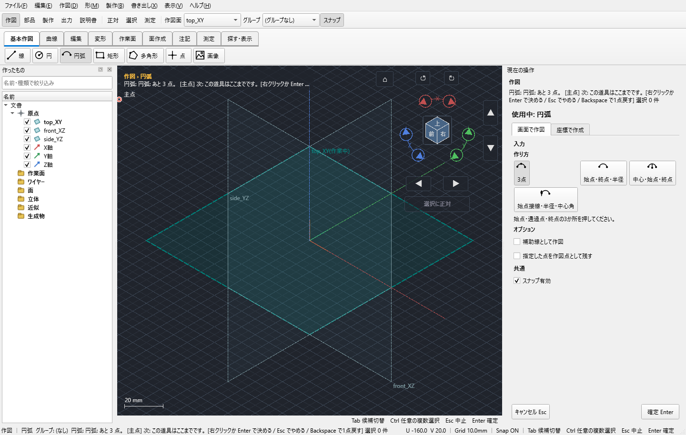
kachakacha_cad_next.exe を起動します。top_XY、front_XZ、side_YZ が作られます。.kcd2 を保存します。保存は一時ファイルを経由し、失敗しても元ファイルを残します。samples フォルダーから開けます。.kcd は完全互換ではありません。読み込めない命令は理由番号とともに飛ばされます。重要な設計はV2で作り直して .kcd2 として保存してください。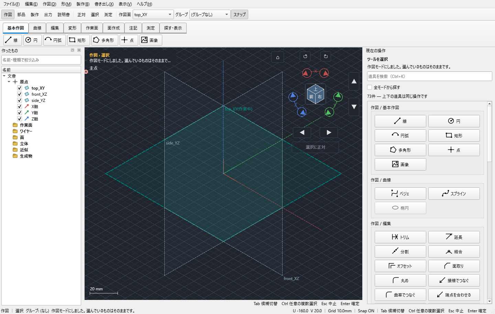
最短の実用確認は、1/87の車体側板を一枚作り、窓を配列し、0.5 mmで押し出し、型紙PDFへ出す手順です。詳しいクリック順は はじめての1枚 にあります。
top_XY を作業平面にし、実車5000 × 3000 mmを1/87にした 57.471 × 34.483 mm の矩形を作ります。作図・部品・製作・出力に加え、「説明書」で組み立て手順の3D配置・矢印・画像出力を行います。
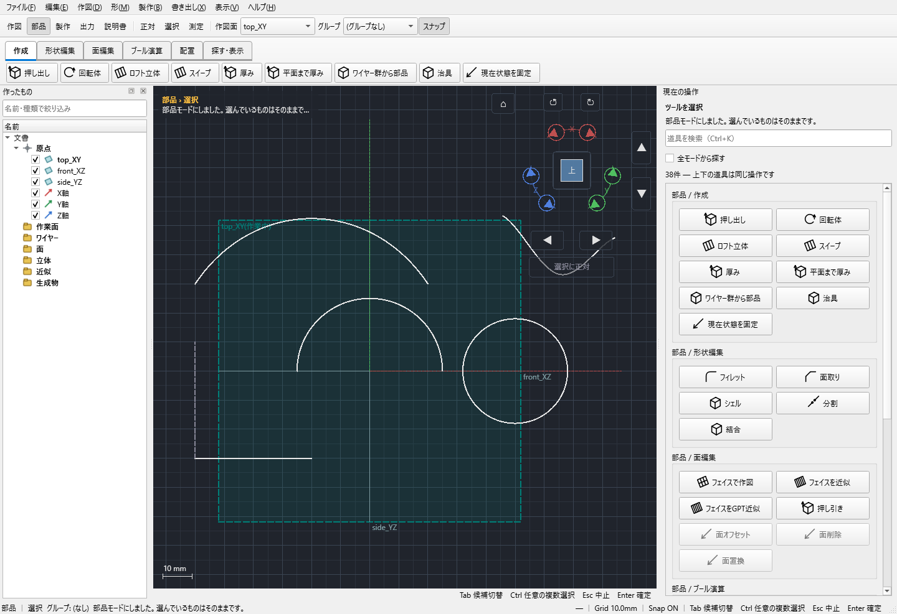
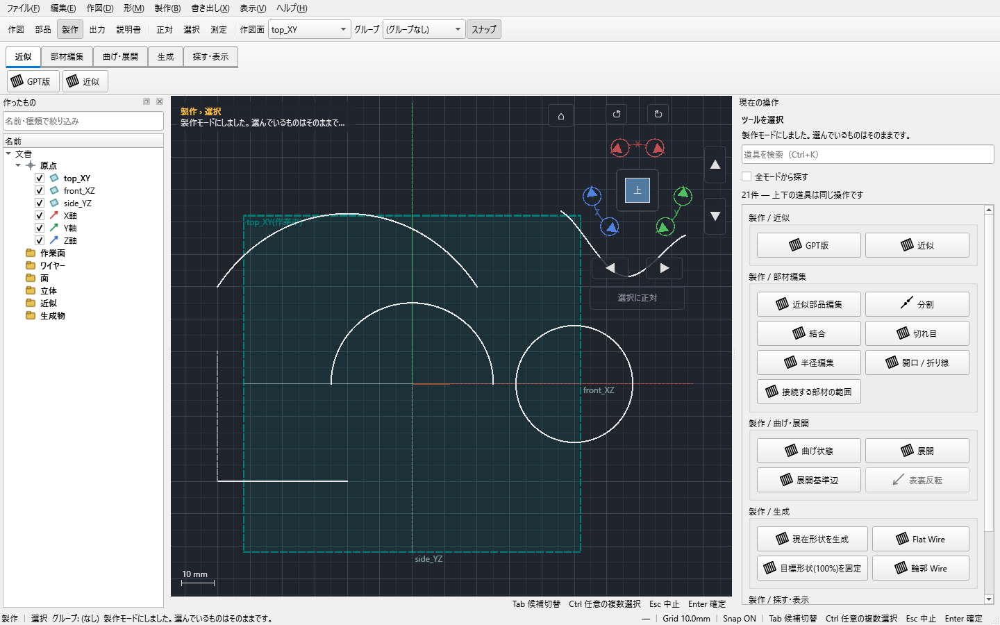
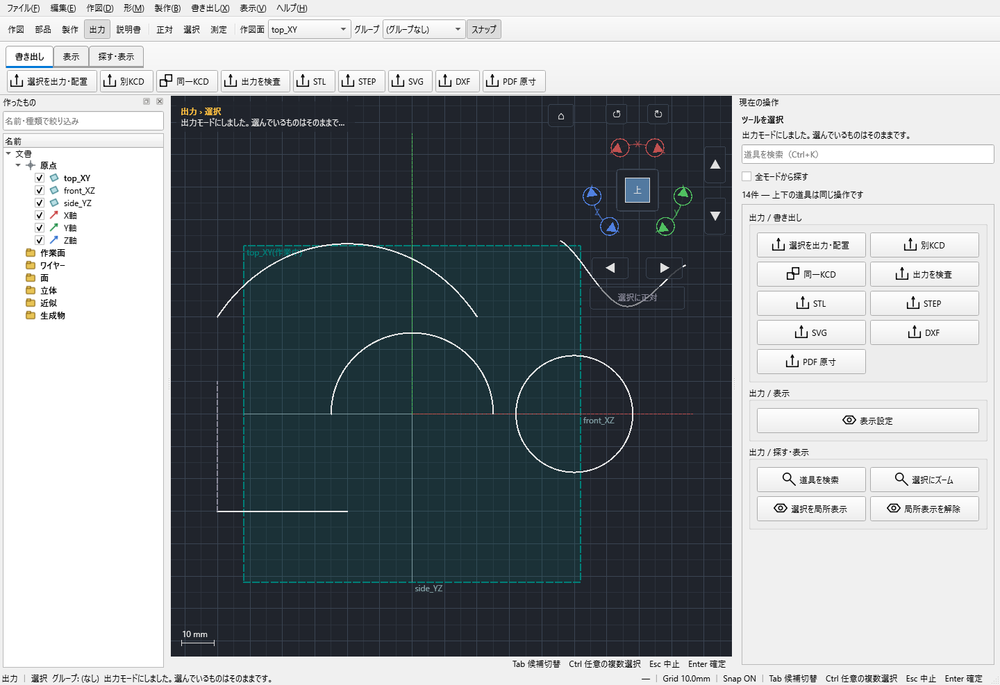
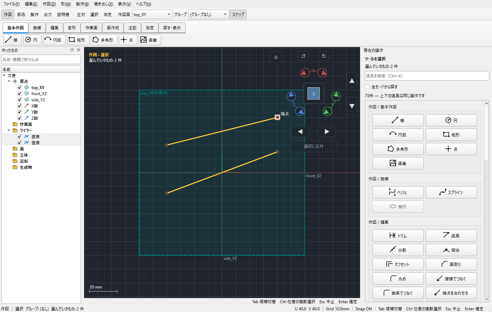
新しく作る点、線、面、部品は、上部の作業中グループへ自動で入ります。作業平面はワイヤーの所有者ではなく、描くときの座標基準です。作業平面を変えても既存ワイヤーは移動しません。
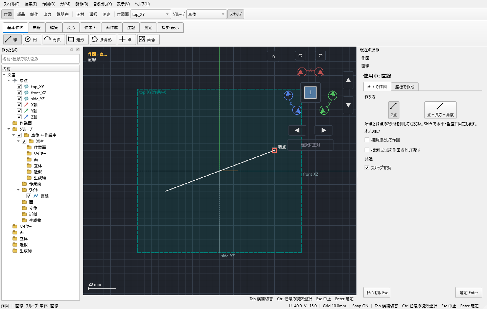
全体表示で見えている形を画面に収め、選択に正対で選んだ平面へ向けます。設計、グリッドなし、完成形、選択だけの表示段階を使い分けられます。線の色と太さは表示設定で変えられ、形状データには影響しません。
上部バー・メニュー・右ペインのツール一覧は同じ操作です。使用中のツールを選び直しても、入力を確定せずそのまま続けられます。対象・条件・プレビューを確認してEnterまたは確定ボタンで適用してください。
3Dビューの右クリックは、どのツールでもメニューを開きます。開いただけでは入力や測定を消しません。「適用」「入力を取り消す」「ツールを終了」を選べます。作図中の「直前の点を戻す」はBackspace、入力取消はEscと同じです。Escではツールと設定を維持します。測定結果は「測定をクリア」で消せます。
Ctrl+Kで右ペインの道具検索を開きます。名前、カテゴリ、操作説明、命令IDで検索できます。「全モードから探す」を選ぶと、別モードの道具も開始できます。先に選んだ対象は保持します。入力欄でEnterを押すと、最初の使用可能な道具を開始します。
上部と右ペインの道具は同じ操作です。ボタンにカーソルを置くと説明・ショートカット、使用できない場合は理由を表示します。
「探す・表示 → 選択にズーム」で、選択したワイヤ・点・面・立体・画像に表示範囲を合わせます。
「選択を局所表示」は対象を絞って作業する機能です。選択を解除しても表示は維持され、新しく作ったものも表示します。隠したものは通常の3D選択・スナップから除きます。文書の非表示属性は変更しません。
3Dビュー左上の「局所表示中 — 解除」、または「局所表示を解除」で戻ります。局所表示は保存しません。出力対象を自動的に限定する機能ではないので、出力するものは明示的に選択してください。
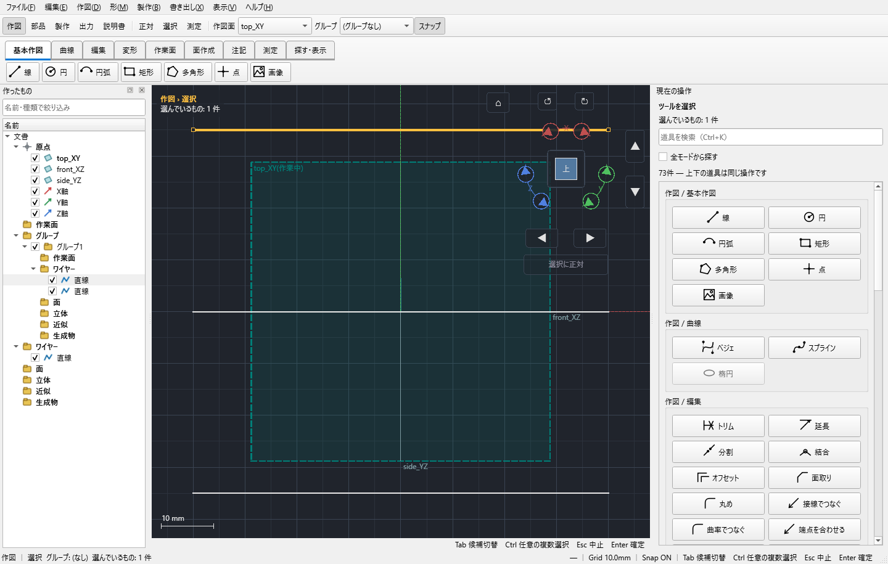
作図点、直線、ポリライン、矩形、円、円弧、ベジェ、スプラインを2D作業平面上にも3D空間にも置けます。作図中はカーソルの近くに数値欄が開きます。
長さ、半径、角度などの数値欄は (180/2)*3、25.4/2 のような四則演算と括弧を受け付けます。確定前に単位と結果を確認してください。
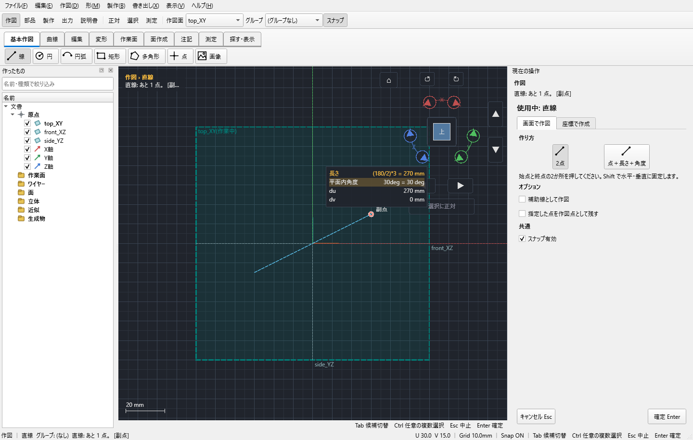
| 作り方 | 入力順 | 用途 |
|---|---|---|
| 3点 | 始点 → 通過点 → 終点 | 既存点を通る円弧 |
| 両端と半径 | 始点 → 終点 → 半径 | 弦とRが決まった輪郭 |
| 始点と接線 | 始点 → 接線方向 → 半径 → 中心角 | 既存線から滑らかに生やす |
寸法欄は 0.25 や -0.125 を途中で書き換えずに入力できます。Enter・Tab・欄を離れる操作で適用します。数値を変更した直後のEnterはプレビュー更新、次のEnterでツールを確定します。作図中に長さだけ指定した場合は、表示中のスナップ・水平垂直の方向を保ちます。
端点、中心、交点、作図点へ近づくと候補の丸が大きく表示されます。格子はカーソルの近く（最大4 px、細かい格子ではさらに狭い範囲）だけに吸着します。端点・交点の吸着範囲は維持しています。Sを押している間は吸着しません。Shiftは水平・垂直方向の拘束、Ctrlは複数選択です。F3でスナップ全体を切り替えます。
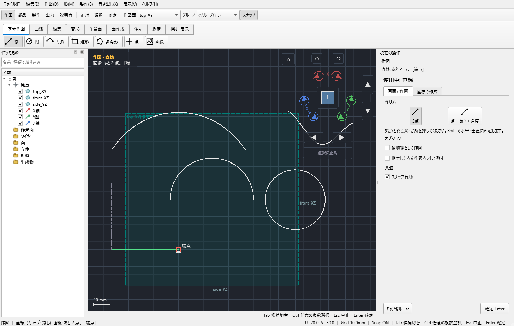
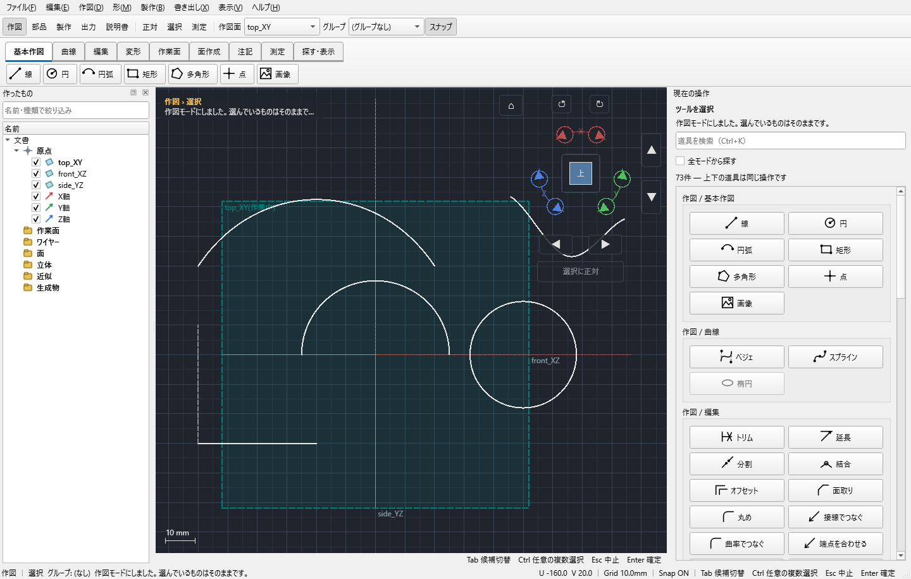
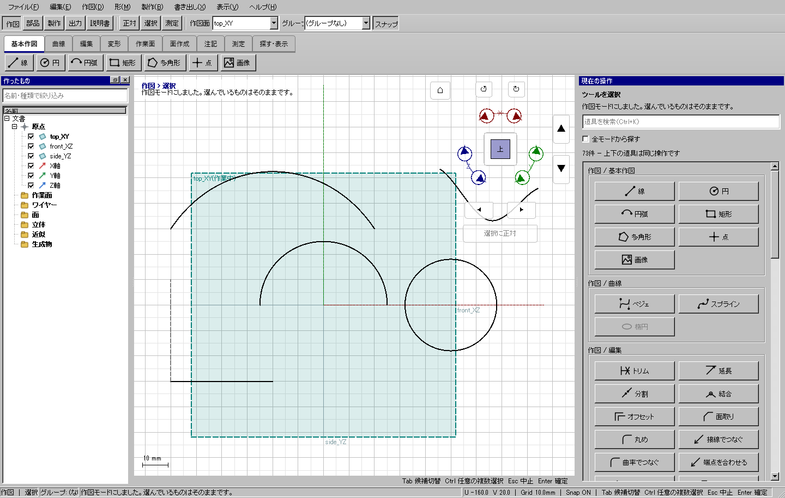
主間隔と副点数を設定できます。グリッド原点を移動は、既存の作図点や幾何点を新しい基準にします。
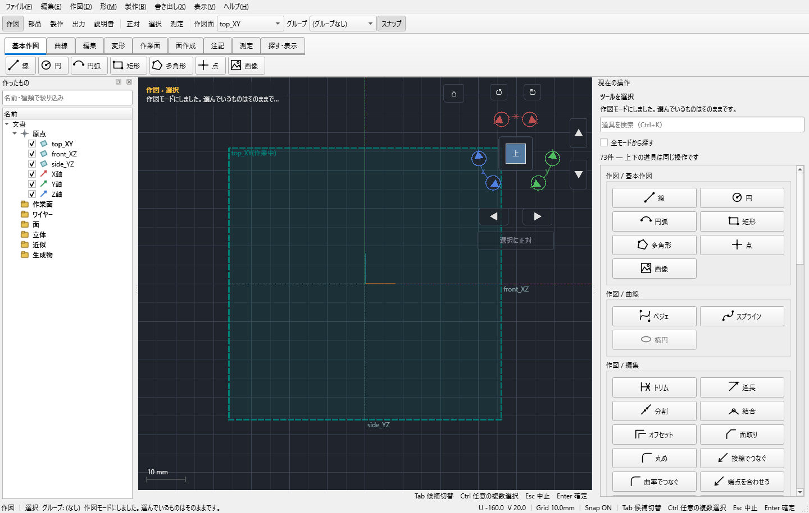
作業平面を作るでは次の12通りを選べます。選んだ幾何が足りない場合は作成せず、必要な選択を表示します。
| 分類 | 作り方 | 指定 |
|---|---|---|
| 基準 | 標準面 | XY、YZ、ZX |
| 平行 | 平面から離す | 元平面、距離 |
| 平行 | 点を通り平行 | 点、元平面 |
| 中間 | 2面の中間 | 平行な2平面 |
| 中心 | 円筒の中心 | 円筒面 |
| 角度 | 辺まわりに角度 | 平面、直線、角度 |
| 点 | 3点を通る | 一直線でない3点 |
| 辺 | 2辺を含む | 同一平面上の2辺 |
| 接線 | 辺を通り接する | 曲面、その上の辺 |
| 接線 | 点を通り接する | 曲面上の点 |
| 垂直 | 点で曲線に直角 | 曲線上の点、曲率法線の使用 |
| 数値 | 位置と向きを数値指定 | 原点、法線、平面内X、名前 |
作成後は数値で編集で原点、法線、平面内X方向を直せます。法線とX方向が平行、法線がゼロなどの不正値は受け付けません。
トリム、延長、分割、結合、端点一致、接線接続、曲率接続、C面取り、R丸めを使います。トリムと延長は対応曲線を境界まで計算します。作れない交点や半径なら元の線を残して断ります。
移動、コピー、ミラー、回転に加え、直線配列と円形配列があります。配列個数は元形状を含めて2～200です。直線配列は間隔または全長、円形配列は中心と合計角度を指定します。360度では始点の重複を作りません。
基準線に設定すると一点鎖線として表示されます。部品の輪郭には使わず、中心・対称・寸法の基準として残せます。交点に点は選択線の全交点へ作図点を置きます。
測定ツールを先に選び、3D画面または左ツリーから対象を選べます。線を先に選ぶ順も使えます。直線と2点間には現在の作業面の底辺（U）・高さ（V）・面外の高低差を表示します。2点・3点測定は完了後のクリックで次の組を始めます。
| モード | 選択 | 表示 |
|---|---|---|
| 2点 | 任意の2点 | 3D距離、dX/dY/dZ、XY/YZ/ZX投影距離、軸との角度 |
| 3点角度 | 始点、頂点、終点 | 三点のなす角 |
| 要素 | 曲線+点 | 接線、法線、曲率半径、点との関係 |
| 要素 | 曲線+曲線 | 最短距離、接線角、法線角 |
測定値から作図点を残せます。測定線は形状ではないため、出力や部品には入りません。
作図 → 測定 → 面積を選び、閉じた輪郭を選択します。長さと面積を混同せず、表示単位と近似の注記を確認します。直線・円弧以外の曲線を刻んで測る場合は近似です。測定表示自体は工作用の形状や型紙にはなりません。
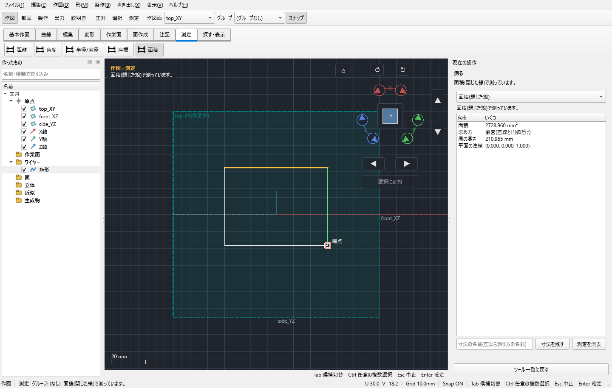
作図 → 基本作図 → 画像でPNG・JPEG・BMPを読み込みます。現在の作業面、または3Dで選んだ面・ソリッドのフェイスにプレビューします。
画像ツールを開いた状態で画像を左ドラッグすると、画像が追従して移動します。離して仮置き、Enterで確定、Escで取消。ドラッグ中はグリッドへ吸着しません。貼付済みの画像は選択して「画像」を開いてからドラッグします。
曲面では「方向を指定して投影」と「面に沿わせる（UV）」を選べます。UVの貼付は曲面上で伸縮し、周期面では継ぎ目があります。曲面表示は三角形による近似です。貼付先はその時点の独立コピーで、元部品の変更には追従しません。
画像はKCDに内包され、元の画像ファイルを移動しても残ります。STL・STEPの幾何には変換しません。画像を含む文書は名前を付けて保存でKCD保存してください。画像は1600万画素・各辺16384画素以内です。
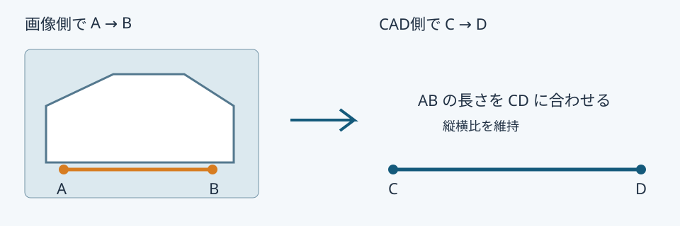
位置調整は画像ツールで左ドラッグ。画像がカーソルに追従し、離して仮置き、Enterで確定します。貼付後も同じ道具で再編集し、左右反転・透明度・幅・回転を変更できます。曲面UVでの寸法合わせは局所尺度による近似です。
面にしたい線を選んで、帯の 面作成 → 面にする(Shift+F)を押します。端点のつながりから閉じた輪を全部見つけ、輪ごとに作り方を決めます(同じ平面に載る輪 → 平面、4 辺で平らでない輪 → 四辺面、それ以外 → 境界面。近似。輪が無く開いた線が並んでいれば → ロフト)。右の棚に輪の表が出て、輪ごとに作り方を変えたり、作らない輪を外したりできます。線の端が別の線の途中に乗っていれば(T 字)、Enter のときにその線を分けてから作ります。端が離れていれば、どこが何 mm かを言い、[寄せる](直線の端だけ動かす)か [そのまま] を選べます。許容(端)は棚の数で変えられます。輪の辺がすでにある面の縁に重なる、または同じ計画の別の輪と線を共有していれば、その辺に連続の欄(辺 n G0)が出て、押すと G0 → G1 → G2 と回ります(3D でその辺の上に置いて Tab でも)。平面の輪には付けられません(四辺面・境界面に変えると付けられます)。隣の無い辺は黙って G1 にしません。下見が出たら Enter で作ります。元の線は残ります。作る・寄せる・分けるは 1 回の取り消しで全部戻ります。作った直後は棚に直前: 面にする(n 枚)[開いて直す]が残り、開くと作ったものを 1 回の取り消しで戻して同じ線で構え直します(作り方・連続・許容を変えて Enter で作り直す)。そのあとに別の変更があれば開けません。別の道具を持つと消えます。作った面(形状ガイド)には U/V の格子(1 方向 8 本)が薄く重なり、膨らみやねじれが見えます(立体には出ません。稜線で形が読めるため)。
線を 1 本選ぶと、右の編集の棚に 載る面(上面 XY / 正面 XZ / 側面 YZ / それに平行 / 傾いた平面 / なし)、長さ、始点と終点がどの線のどの端につながっているか(0.000 mm)、別の線の途中に乗っているか(T 字)、近い端まで何 mm 離れているかが出ます。離れていれば [始点を寄せる] / [終点を寄せる] でその場で寄せられます(直線・折れ線だけ)。面を作る段で初めて断られる、を無くすための行です。
一本の外形や断面が、直線と円弧、複数スプラインなどの組み合わせでも扱えます。先に線を役割表へ入れ、一続きの鎖として並べます。端が逆なら向きを反転で合わせます。
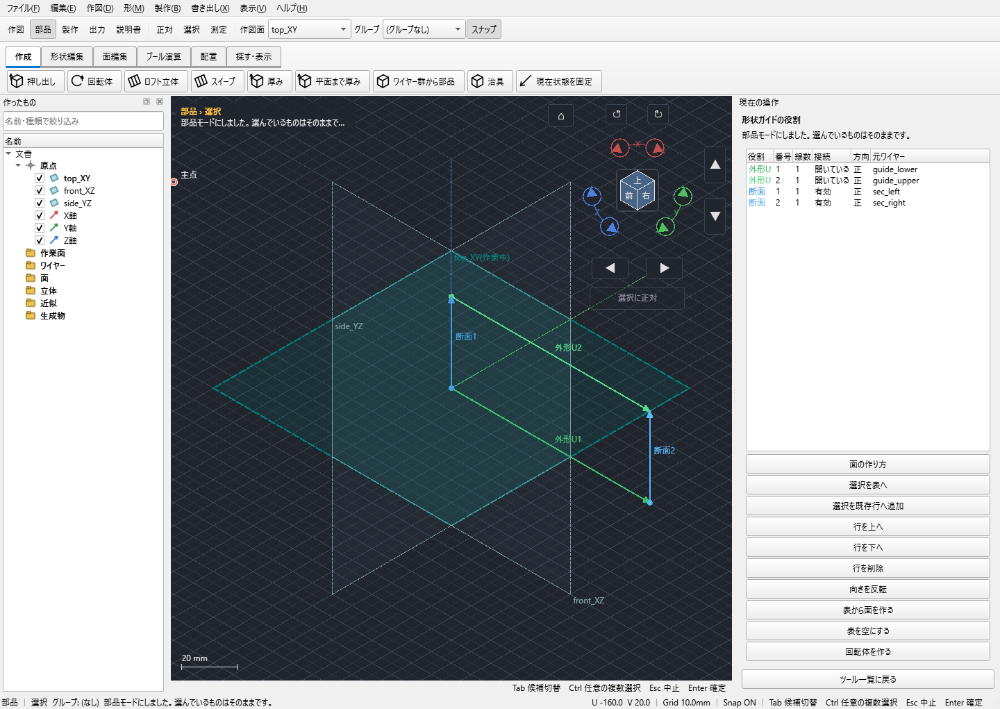
| 作り方 | 必要な役割 | 用途 |
|---|---|---|
| 平面 | 閉じた外形と任意の穴 | 平らな自由輪郭 |
| ルールド | 断面2本 | 対応点間を直線で渡す面 |
| ロフト | 断面2本以上(両端にガイドが1本ずつあれば1本でも)+ ガイド何本でも + 中心線1本まで | 断面列を滑らかに通る面。外側のガイドが両脇にあれば断面とガイドの網で全部の線を通す |
| 案内付きロフト | ガイド1本以上と断面 | ロフトと同じ中身(互換の入口) |
| 曲線網 | 交差する外形Uと外形V | Gordon型の曲線ネットワーク |
| 境界埋め | 外周の閉じた輪(3辺以上)+ 任意の「通る線」 | 外周の内側を、内側に引いた線を必ず通して埋める面。外周と内側の線をまとめて境界へ入れても、外周の輪と通る線に自動で分ける |
| 離した面 | 元の形状ガイドと距離 | 既存面のオフセット参照面 |
曲面へ投影は一枚の形状ガイドへ、回り込み投影は複数面へ区間ごとに線を落とします。窓やライト穴の輪郭に使います。回転体は断面と軸から複数断面を生成してロフトします。
作図 → 面作成 → ロフト面。断面を追加し、必要に応じてガイドを追加します。断面順と矢印の向きを揃え、ねじれをプレビューで確認します。GPT版を使う場合は「断面をつなぐ」、外周と内部線を使う場合は「外周から張る（近似）」を選びます。入力線の最大／RMS偏差を確認して確定します。
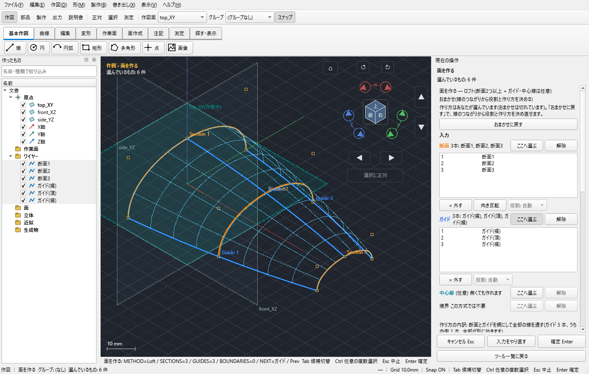
V2では「面」と「板材」を別の完成物として扱いません。形状ガイドは参照、体積を持つものはすべて部品です。部品工程に切り替えると、右側に各道具の設定がまとまって表示されます。
閉じた輪郭を一つ以上選びます。外周内の閉じた輪郭は穴として扱えます。方向は法線、作図面法線、XYZなどから、範囲は距離、両側、作業平面までなどから選びます。プレビューには体積と面数が表示されます。
自己交差、ゼロ厚、開いた境界、非多様体、オフセットの裏返りなどで堅牢な部品を作れない場合、アプリは落ちずに理由番号を表示します。
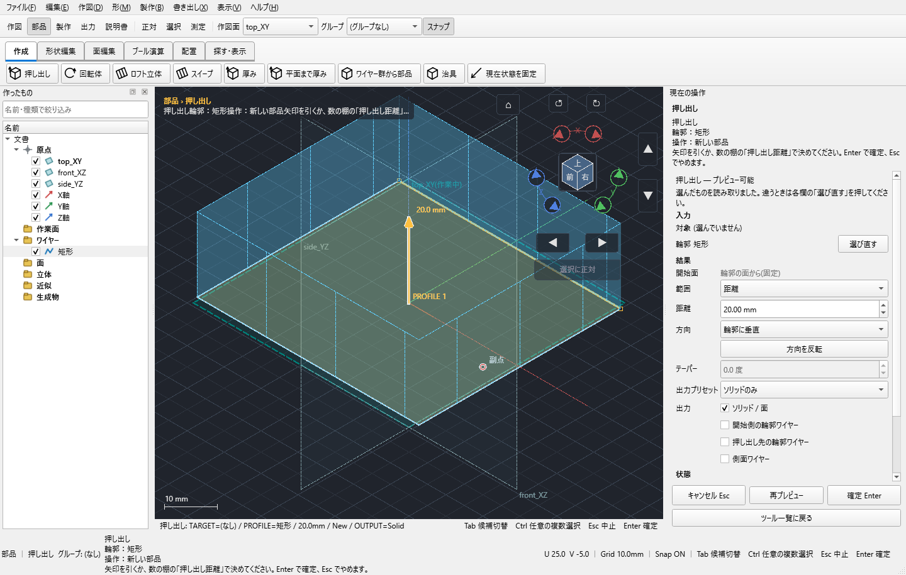
曲面入力は形状ガイド1個。曲面押し出しは一定方向への平行移動であり、法線方向の厚み付けとは異なります。曲面入力の「全部貫く」、複数面・輪郭の混在、曲面入力の独立ワイヤー出力は未対応です。終端曲面は1枚のBRep面を指定します。
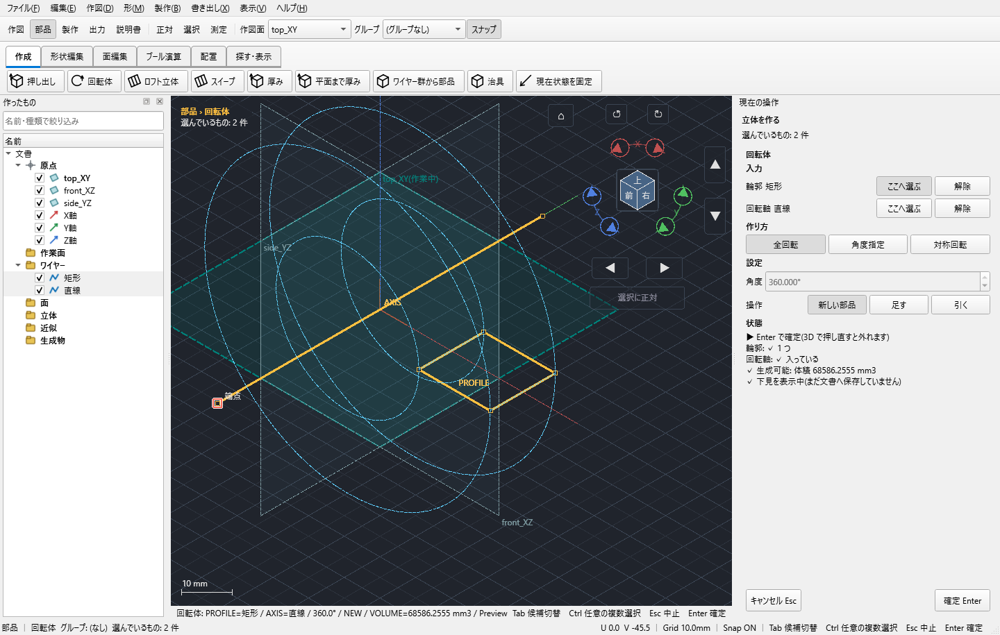
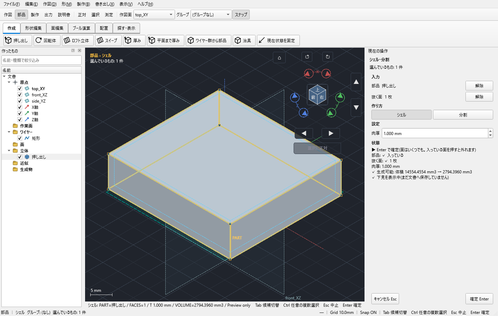
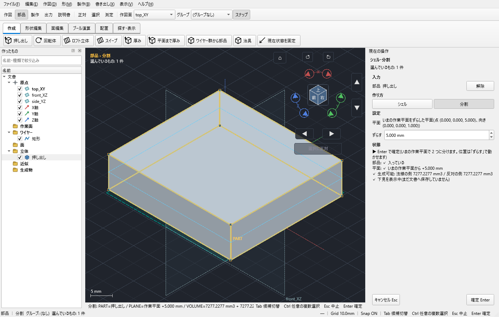
部品 → ブール演算 → めり込み一覧。通常の3Dビューに重なりを表示し、右ペインで処理します。表示中の部品を検査し、非表示の履歴部品は必要なら追加できます。
①黄色にしたいめり込み領域を3Dまたは一覧で選択 → ②「選んだ側を残す／選んだ側を削る」を切替 → ③部品を3Dでクリック（右の部品名ボタンでも可） → ④緑の完成輪郭を確認して Enter。「残す」は選んだ側を維持し、相手のその領域を削ります。同じ組の別領域にも個別指定できます。別の領域を3Dで選ぶときは「めり込み部分を選び直す」を押します。取消 Esc では文書を変更しません。
「この組の交差ワイヤーだけ作る」は元の両部品を残し、編集可能な独立ワイヤーを生成します。面接触ではワイヤーのみ作れます。選択した組に複数の境界がある場合はその組の境界を生成します。従来の「交わりで分割」は上のツールバーから使えます。
部品を先に選ぶ方法と、道具を選んで対象欄に入れる方法があります。引く操作では土台と相手を区別します。プレビューで残る形を確認し、確定します。局所的なめり込みを処理する場合は「めり込み一覧」で領域を選び、残す／削るを切り替え、側を選んでEnterを押します。境界だけ必要なら「交わりにワイヤー」を選びます。
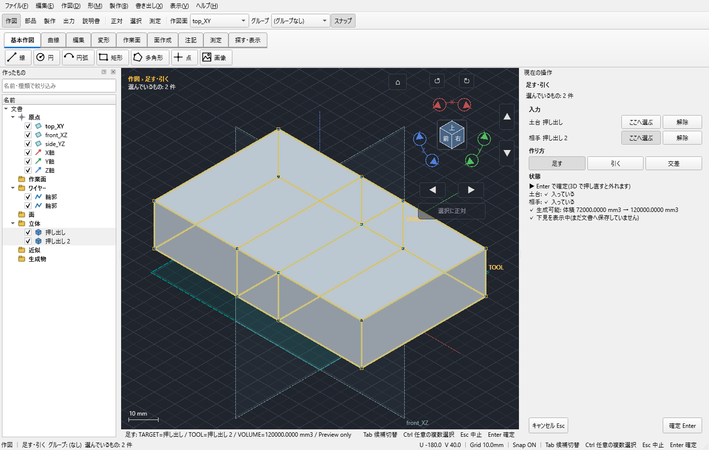
理想部品または形状ガイドを選び、元を変更せず別オブジェクトの製作モデルを作ります。三角形を大量に作るのではなく、工作できる少数の大きな連続パネルを優先します。
分割間隔の自動調整: 従来の帯近似とGPT版の両方に「間隔を自動調整（急な曲がりを細かく）」があります。オンにすると急な曲がりを細かく、緩い部分を広く残します。部材数の上限を守り、上限でも等間隔へ戻しません。従来版は「面1枚を何枚に」の枚数を不等間隔で配分し、0なら許容偏差から枚数を増やします。手動境界は空にして自動境界を選んでください。枚数を指定した場合は枚数を優先し、最小幅未満の帯も下見に表示します。いちばん細い帯の実幅と最小幅を警告として表示するので、工作できる幅か確認してください。幅を優先するなら枚数を0にします。角の数や枚数上限との衝突は解決方法を表示します。手動で部材を分割・結合すると、その境界を保持する手動モードへ移ります。設定は保存され、型紙にも同じ分割を使います。取消後は同じ場所の「近似を始める」からやり直せます。活動中の枚数・許容偏差・板厚の変更は下見へ反映します。不正な入力中は古い下見を確定できず、入力を修正すれば再開できます。
面(形状ガイド)を選んで、帯の 製作 → 近似 を押すだけで、既定の作り方で候補が作られ、下見のレール(紫)が 3D に出ます。Enter で作ります。既定は 縦に割る(裾から屋根へ上下に走る線で割る「みかんの皮」割り。鉄道前面向き)、縁の角(折れ)で必ず割る(屋根と側面の境の角にレールが来る)、面 1 枚を 4 枚に(角の区間ごとに幅で配り、区間の中は実幅で等分)。棚の「切る向き」で 横に割る(水平に走る線で割る。ペットボトルの肩のような帯)、自動(曲がっている方向を横切る)、U / V(面のパラメータそのもの)に変えられます。枚数を 0 にすると許すずれから自動で切ります。面を 2 枚以上選ぶと、面ごとに近似モデルが 1 つずつでき(曲げ状態と部材の編集は近似モデルごと)、1 回の取り消しで全部戻ります。枚数で割ると最小幅より細い帯も作りますが、状態行で言います。
曲げ状態(組立率・基準値)と部材の編集は、いまの近似モデルの対象部材に当たります。いまの近似モデルは、3D でその元の面を押すか、左の一覧で近似モデルか「部材 n」の行を選んだものです(何も選んでいなければ最後に作ったもの)。下見では、いまの近似モデルの帯が選択色の実線、対象部材の帯が選択色で塗られ、ほかの近似モデルの帯は点線のままです。3D で下見の帯を押すと、その帯が対象部材になります。一覧の「部材 n」を選んでも同じです。
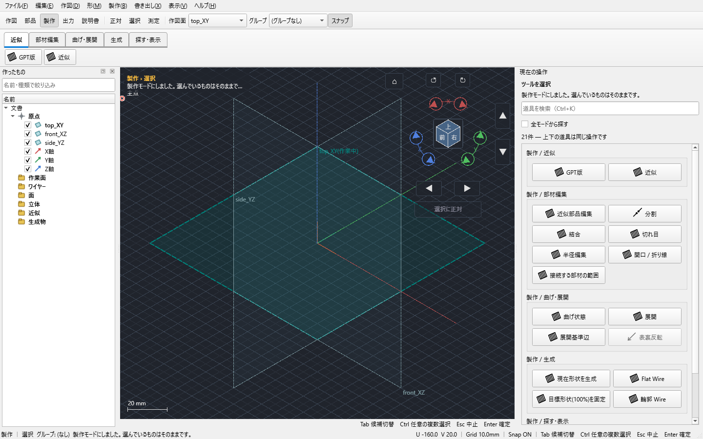
| 線 | 役割 | 結果 |
|---|---|---|
| 閉じた輪 | 開口 | 窓、ライト穴などの抜き穴 |
| 開いた線 | 折り線 | 部材を切らずに折る線 |
| 開いた線 | 切れ目 | 部材を分離しないrelief cut |
ライトや窓は曲面へ投影した閉じたワイヤーを開口に割り当てます。開口は近似面の多角化とは別に保持され、型紙プレビューでも穴として確認します。
近似の条件欄で「確定時：ワイヤーも生成」または「確定時：ワイヤー＋近似面も生成」を選べます。「近似モデルのみ」なら、後から製作の生成欄で作ります。従来版・GPT版の両方で指定できます。近似面は厚みのない形状ガイドです。独立生成は元の近似モデルを残し、後の曲げ変更には追従しません。確定後の生成を取り消しても近似モデルは残ります。
0%は展開状態、100%は組み立て状態です。途中の曲げ方は近似方式に依存します。帯近似では部材の長さを保って曲げます。任意位置で止め、現在状態を固定すると、ワイヤーのみ、ワイヤー＋近似面、または厚み付き部品を独立オブジェクトとして作れます。対象部材に番号があればその部材だけ、全体には「すべて」を指定します。空欄では生成しません。短辺も含む輪郭になります。生成先は同じkcd2内／別のkcd2ファイルから選べます。別ファイルへの生成では元の文書を変更しません。
型紙を作ると、型紙表示に外周、開口、折り線、切れ目が出ます。紙サイズや重なりを確認してから1:1 PDF、SVG、DXFへ出します。
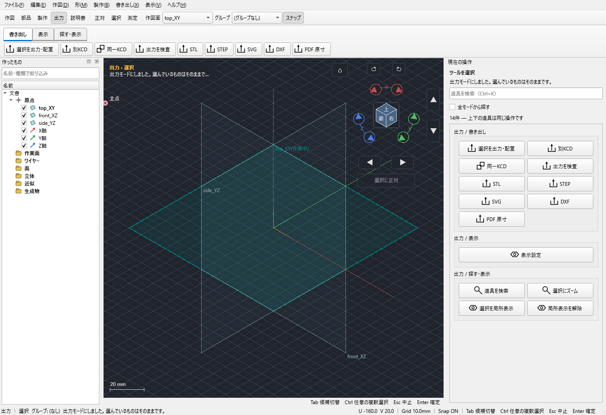
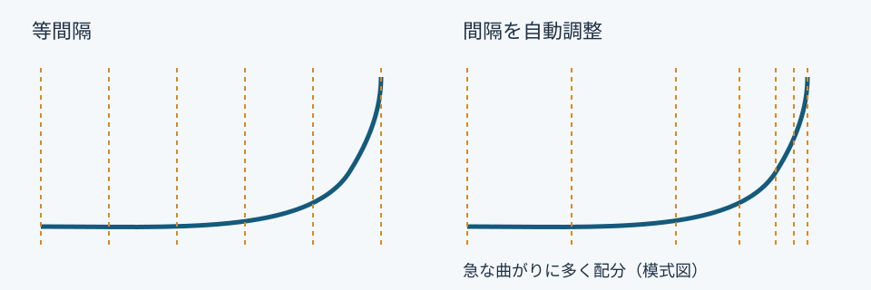
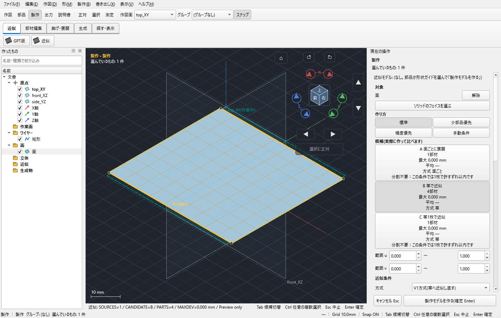
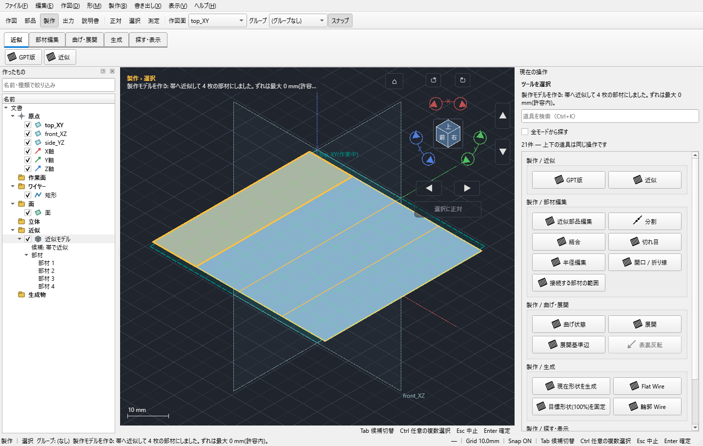
従来版で枚数が正なら指定枚数を優先し、最小幅未満は数値で警告します。0なら許容ずれと最小幅の範囲で自動枚数を決めます。手動境界や最大枚数と衝突すると理由を表示します。GPT版の最大／RMSは標本による近似評価で、全領域の誤差上界の保証ではありません。
Escで取り消した後は同じ対象で再開始できます。条件変更でプレビューが消えたら、不正な値や未達条件を修正して「プレビュー更新」を使います。GPT版の厚み付き部品生成や未対応の手動切れ目を、対応済みとは扱わないでください。
先に何を出すかを選びます。画面に見えているだけでは出力対象になりません。出力前検査が失敗した場合、壊れたファイルを成功扱いしません。
| 何を出すか | 使える形式 |
|---|---|
| 見えている部品 | STL / STEP |
| 選択した部品 | STL / STEP |
| 選択した製作部材 | STL / STEP |
| 現在の型紙 | SVG / DXF / 1:1 PDF |
| 選択したワイヤー | DXF |
| 選択したもの | KCD2 |
| プロジェクト全体 | KCD2 |
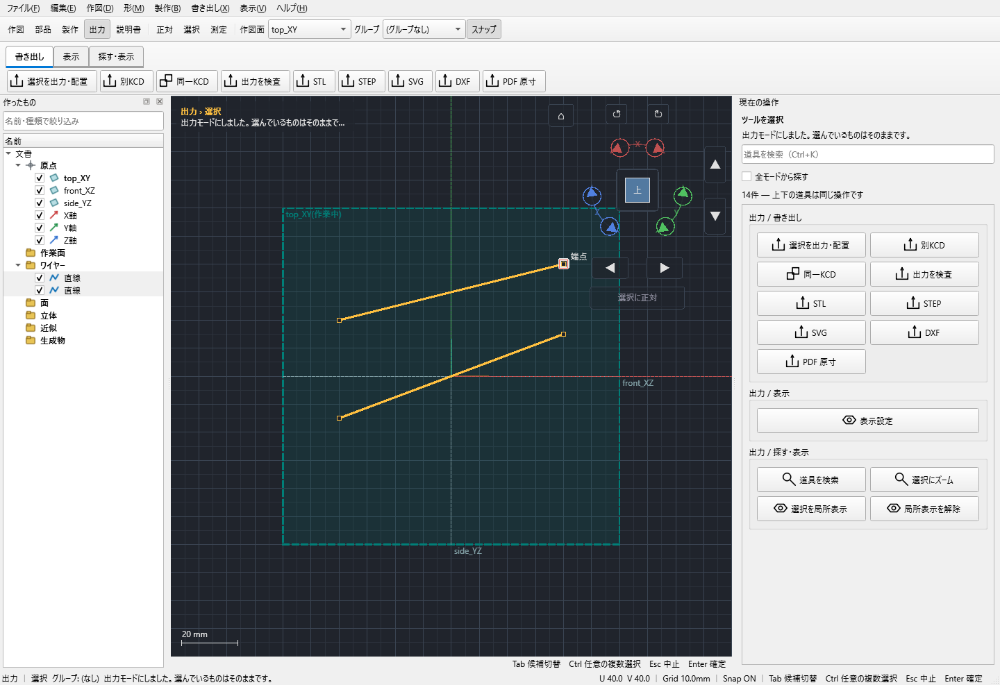
表示とSTLの三角形化には偏差指定0.01 mmを使用します（実測した最大／RMS誤差ではありません）。独立した立体・面を出力したKCD2は、この機能に対応する新しい実行ファイルで開いてください。
どのモードでも「書き出し」→「選択を出力・配置」を開けます。3Dビューまたは左一覧で対象を選び、「選択を取り込む」を押します。対象を先に選んで開く方法も使えます。「物体全体」か「選択した面・辺・点だけ」を指定し、一覧のチェックで出すものを確認します。
STL、STEP、別KCD2、同一KCDへの独立コピーを選びます。元の位置を維持するか、基準点を面へ配置するかを選べます。配置元の基準点と向き、配置先の面上の点を3Dで指定できます。曲面ではクリック位置の接平面に向きを合わせます。数値でも位置・向きを変更できます。
右の3Dプレビューをドラッグして回転、ホイールで拡大し、確認してから出力します。元の対象は残ります。立体・面のKCDコピーは現在の形状を保存し、元への追従はしません。線はSTEPとKCD、点・作業平面はKCDで出力します。STLは面の近似三角形であり、厚みのない面に厚みを追加しません。
製作の生成と近似確定時の自動生成にも配置の選択があります。近似モデルの出力は指定した対象部材の現在の曲げ状態を使います。配置プレビューを取り消しても元の形状は変わりません。
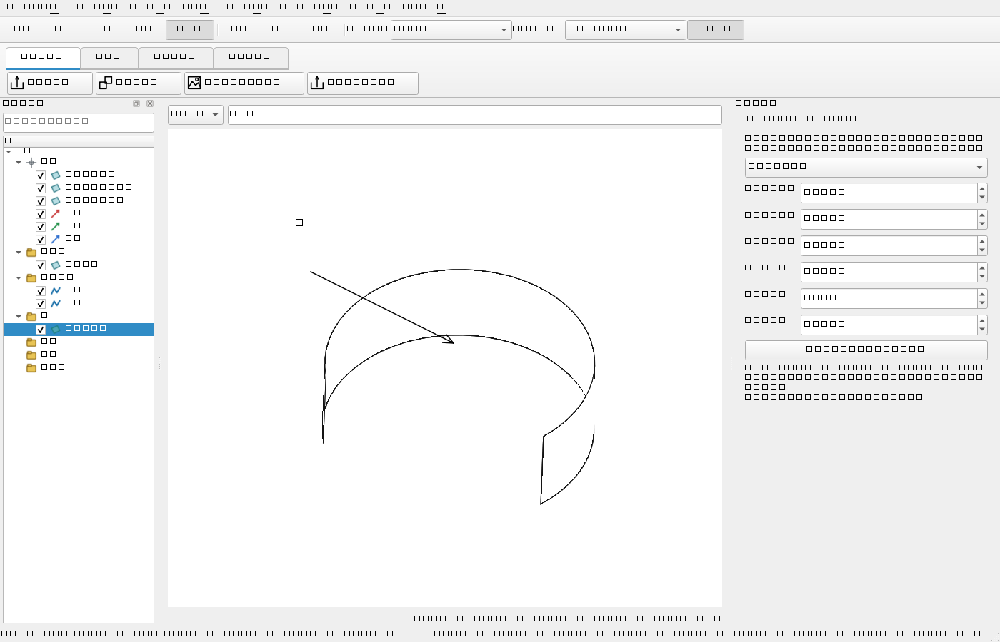
入力は表示中の部品・面です。ワイヤーや作業面は取り込みません。1コマ128部品まで、共有表示形状は50万三角形まで。輪郭は表示メッシュによる近似で、厳密なBRep隠線処理ではありません。元CADへの自動追従や組立アニメーションはありません。画像の幅・高さは64〜4096px、選べる形式は実行環境の対応形式です。旧 .kci の2D図は背景として読めますが、3D移動にはモデルを取り込み直します。
同梱の samples/streamlined-railway-nose-1-87.kcd2 は、ER1 / 初期ER2の丸形前頭部を参考にした1/87の試験体です。車両全体ではなく、複数断面ロフト、窓開口、前照灯開口、厚み、製作近似を一度に確認する短い前頭部です。
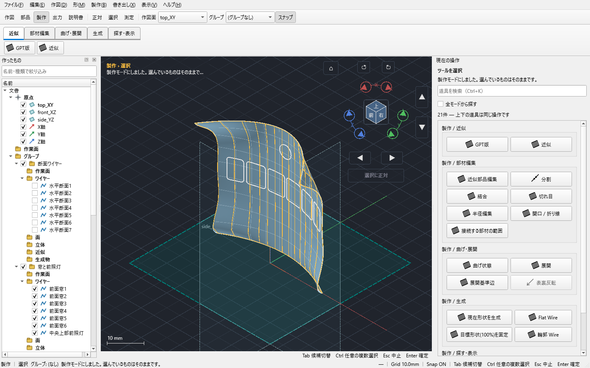
| 項目 | 模型寸法 | 扱い |
|---|---|---|
| 最大幅 | 3520 / 87 = 約40.460 mm | 確認できる実車幅を縮尺化 |
| 外板高さ | 約41.38 mm | 試験用近似値 |
| 外板厚 | 0.20 mm | 試験用工作値 |
| 断面数 | 7 | 曲率変化試験用 |
| 窓 | 左右各3枚 | 側面ほど狭い試験輪郭 |
| 製作近似 | 再現度6、最大誤差0.11 mm、最大24部材 | 少数大部材優先 |
作れない形を黙って近い形に置き換えません。メッセージには GEO-E...、EXT-E...、FAB-E... のような理由番号が付きます。docs/v2/diagnostic-catalog.md で原因と対処を確認できます。
| キー | 操作 | キー | 操作 |
|---|---|---|---|
| Ctrl+N | 新規 | Ctrl+O | 開く |
| Ctrl+S | 保存 | Ctrl+Shift+S | 名前を付けて保存 |
| Ctrl+Z | 元に戻す | Ctrl+Y | やり直す |
| V | 選択 | M | 測定 |
| D | 作図点 | L | 直線 |
| P | ポリライン | R | 矩形 |
| C | 円 | A | 円弧 |
| B | ベジェ | (なし) | スプライン |
| X | トリム | E | 延長 |
| I | 端点一致 | T | 接線接続 |
| Shift+T | 曲率接続 | Shift+E | 押し出し |
| F | 全体表示 | F3 | スナップ切替 |
| S | 押している間だけスナップ解除 | Del | 削除 |
| Ctrl+H | 選択を隠す | Shift+F | 面にする |
| Shift+M | 対称に写す | Tab(面にするの最中) | 置いた辺の連続 G0→G1→G2 |
「押し出し」を選んでから輪郭や形状ガイドの面を選べます。「方向を反転」で向きを入れ替え、「左右対称」「両方向に別々の距離」で両側へ伸ばせます。別の直線の方向へ斜めに押す場合は「選んだ線の向き」の専用欄で指定します。
終端は面、線全体の斜面、線の始点・終点、作図点を区別して選びます。点の終端は押し出し方向に垂直です。曲面も元の形を保って押し出せます。適用範囲と制約を参照してください。
左の一覧を右クリックして「グループを作る」。グループ外のカテゴリは従来通りです。各グループ内にも同じカテゴリがあり、作業中グループで作ったものが分類されます。グループ・カテゴリを選ぶと配下全体が選択され、出力にも使えます。作業面の空欄名は作業面1、作業面2…と自動採番します。
| フェイスで作図 | 部品の面編集から起動してソリッドの面をクリック。作業面を自動生成して直線作図へ進みます。面の事前選択も使えます。曲面ではクリック位置の接平面になります。 |
| フェイスを近似 | フェイスを独立面として取り出し、従来近似の対象にします。 |
| フェイスをGPT近似 | フェイスを独立面として取り出し、GPT版近似の対象にします。 |
元ソリッドは変更しません。抽出面は独立コピーで、近似取消後も残ります。不要ならUndoで抽出を取り消せます。上部のタブ形がカテゴリ、下段の押しボタンが実行ツールです。
画像ツールの「画像フィット」で、画像上の2点→配置先の2点を主3Dビューで指定します。画像の1点目からカーソルへ補助線が追従し、2点目を決めると配置先の指定が終わるまで2点間の直線が残ります。「フィット時に回転する」で2点を一致させます。オフでは画像の向きを維持して長い軸に合わせ、縦横比を維持します。移動・回転を含む下見をEnterで確定します。曲面UV上の長さ合わせは局所尺度による近似です。
「説明書」→「現在のモデルを選ぶ」または「別のモデルを読込」でモデルを指定します。使う部品にチェックを入れ、3Dで確認して「このコマに配置」。複数モデルを追加できます。左ドラッグで部品を移動し、右ドラッグで視点回転、中ドラッグで平行移動、ホイールで拡大します。移動ツールの右ペインでXYZ移動・回転も指定できます。矢印は3D上の始点・終点をクリック、文字も配置位置をクリック。空白では視点中心を通る画面平行面に置きます。標準は白地・黒い輪郭線で隠れ線を消します。元KCDは変更しません。
コマを複製して次の手順を作ります。説明書 .kci に3D表示形状・配置・視点を保存し、全コマをPDFへ出力できます。「コマを画像出力」では幅・高さを指定し、PNG/JPEG/BMPなど実行環境が対応する形式を選んで現在のコマを出力します。旧版 .kci の2D図は背景図として保持します。
新しい手順。手順を複製。現在のモデルを選ぶ。別のモデルを読込。選択・移動。矢印。番号・文章。図から除去。説明書を保存。説明書を開く。PDF。コマを画像出力。道具を選んでから対象を指定します。対象を先に選ぶ操作も使えます。道具を選んでいないときは右側に道具一覧が出ます。右側の設定は入力、条件、作るもの、生成先の順に確認し、下端で確定します。
製作の生成は曲げ状態を選んで「形状を作成」で確定します。対象部材を空欄にしても全体は生成しません。全体には「すべて」を指定してください。曲げ率の基準値を選んだ後は「曲げを適用」を押します。分割・結合はプレビュー後に「編集を確定」で実行し、プレビューの繰り返しでは変更しません。
近似する面の範囲は近似ツール、材料と積層は部材編集にあります。ホームと新規文書は前・右・上が見える等角視点です。回転円弧のX/Y/Zは世界の各軸を示し、クリックで15度、円弧に沿ったドラッグで連続回転します。
一覧の空白を右クリックして「グループを作る」。グループを右クリックして同じ命令を使うと、その中に子グループを作れます。115系 → 前面 → ライトのように入れ子にでき、各階層に作業面・ワイヤー・面・立体・近似・生成物のカテゴリが並びます。上部のグループ欄で作業先を選んで作図します。親のワイヤーや面は子を作っても移動しません。グループ選択は子孫すべて、カテゴリ選択はそのカテゴリ内すべてを選びます。グループ外のカテゴリ構成は変わりません。
上部バーと右のツール一覧は、形を示すイラストと日本語名を併記します。カテゴリは文字のタブ、道具はイラスト付きの押しボタンです。画面が狭い場合は道具が次の行へ折り返します。円などの作り方にも図が付きます。詳しい使い方はボタンにマウスを置くと表示されます。通常・Win95とも同じ配置基準です。
作図点を置きます。
任意位置へ基準点。
図と操作手順を見る · draw.point
2点で直線を引きます。
二点で直線。
図と操作手順を見る · draw.line
点を続けて置きます。Backspaceで1点戻せます。
点列で折れ線。
図と操作手順を見る · draw.polyline
向かい合う2隅で四角を描きます。
対角二点で閉じた矩形。
図と操作手順を見る · draw.rectangle
中心と半径で円を描きます。
中心と半径で円。
図と操作手順を見る · draw.circle
円弧を描きます。作り方は3通りから選べます。
三点、両端+半径、始点+接線。
図と操作手順を見る · draw.arc
制御点4つでベジェ曲線を描きます。
四制御点で曲線。
図と操作手順を見る · draw.bezier
通る点を並べてスプラインを描きます。
通過点列で曲線。
図と操作手順を見る · draw.spline
線の上に置くと、消える区間(いちばん近い交点の間)が破線で見えます。押すと消えます。
線の上に置くと消える区間が見え、押すと消える(境目は画面の全部の線。円は円弧に)。
図と操作手順を見る · wire.trim
線の端の近くに置くと、いちばん近い線まで伸びる先が見えます。押すと伸びます
線の端の近くに置くと伸びる先が見え、押すと伸びる(相手は画面の全部の線)。
図と操作手順を見る · wire.extend
線の上に置くと、いちばん近い交点に × が出ます。押すとそこで 2 本に分かれます
線の上に置くといちばん近い交点が見え、押すとそこで2本に分かれる。
図と操作手順を見る · wire.split
選んだ線・部品を、2点で示した分だけ動かします(元の線は残さず、元の部品は隠します)。
二点差分だけ移動。
図と操作手順を見る · wire.move
選んだ線・部品を、2点で示した分だけ離して複製します。元は残します。
元を残して複製。
図と操作手順を見る · wire.copy
2点で引いた線を鏡にして、選んだ線・部品を複製します。元は残します。
二点の鏡軸で複製。
図と操作手順を見る · wire.mirror
中心・始まりの向き・終わりの向きの3点で、選んだ線・部品を回します。
中心と二方向で回転。
図と操作手順を見る · wire.rotate
中心と倍率(または中心・基準・行き先の3点)で、選んだ線の大きさを変えます。
中心と倍率(または基準の 2 点)で大きさを変える。
図と操作手順を見る · wire.scale
端でつながっている線を何本でも1本の並びにします(並べ替えと向きの反転はするが、
端でつながった線を何本でも1本に接続。
図と操作手順を見る · wire.join
端点どうしを一致させます。
二つの端点を一致。
図と操作手順を見る · wire.coincident
接線が続くように繋ぎます。
G1で滑らかに接続。
図と操作手順を見る · wire.tangent
曲率まで続くように繋ぎます。
曲率まで連続して接続。
図と操作手順を見る · wire.curvature
辺を続けて選び、Enterで角をまとめて平らに落とします。
面取りする辺を続けてクリックし、Enterで一括確定。同じ辺を再クリックで解除。3辺以上は残す側を自動、Bの切戻しを0にする。非対称や延長加工は2辺ずつ。 切戻しが辺の全長と一致しても加工でき、使い切った辺だけを省略する。隣の角との加工範囲が重なる場合は拒否。
図と操作手順を見る · wire.chamfer
辺を続けて選び、Enterで角をまとめて丸めます。半径は数値で決めます。
丸める辺を続けてクリックし、半径を指定してEnterで一括確定。同じ辺を再クリックで解除。離れた角も各2辺を選べる。確定後もR丸めを維持。3辺以上は残す側を自動にする。 切戻しが辺の全長と一致しても加工でき、使い切った辺だけを省略する。隣の角との加工範囲が重なる場合は拒否。
図と操作手順を見る · wire.fillet
選んだ線から加工平面を自動判定し、距離と下見を確認して写します。加工平面は右ペインで変更でき、作図面と元の線は変えません。
加工する線を選び、距離と3Dの下見を確認してEnter。加工平面は自動判定し、現在の作図面や登録済み平面にも変更可能。線や作図面を勝手に投影・変更しない。非平面や未対応の自由曲線は理由を表示する。
図と操作手順を見る · wire.offset
2本の直線を互いの交点まで延ばす(または縮める)。
二直線を交点まで調整。
図と操作手順を見る · wire.meet_lines
選んだ線どうしの交点すべてに作図点を作ります。線は変わりません。
全交点へ作図点。
図と操作手順を見る · wire.intersection_points
選んだ円・円弧の中心に作図点を作ります。線は変わりません。
選んだ円・円弧の中心へ作図点。線は変わらない。
図と操作手順を見る · wire.center_points
選んだ線の始点・終点・中点に作図点を作ります。線は変わりません。
選んだ線の始点・終点・中点へ作図点。線は変わらない。
図と操作手順を見る · wire.key_points
選んだポリラインの直線どうしの角を全部、「面取り量」で平らに落とします。
ポリラインの全角を面取り。
図と操作手順を見る · wire.corner_chamfer
選んだポリラインの直線どうしの角を全部、「丸め半径」の円弧にします。
ポリラインの全角をR丸め。
図と操作手順を見る · wire.corner_fillet
選んだ線を、等間隔に並べて写します。元の線は残ります。
2～200個を直線配列。
図と操作手順を見る · wire.array_linear
選んだ線を、中心のまわりに等角で並べて写します。軸は作図面の法線です。
2～200個を等角配列。
図と操作手順を見る · wire.array_circular
選んだ線を基準線にします(一点鎖線で出ます)。形は変わりません。
補助基準線にする。
図と操作手順を見る · wire.set_datum
基準線をやめて普通の線に戻します。形は変わりません。
通常線へ戻す。
図と操作手順を見る · wire.clear_datum
線を作業平面や面へ投影します。
線を平面または面へ。
図と操作手順を見る · wire.project
角をまたぐ線を、面ごとの区間に分けて落とします(パノラミックウインドウなど)。
複数面へ区間ごとに投影。
図と操作手順を見る · wire.wrap_project
線を、作業平面の向きに沿って形状ガイドの曲面へ落とします。落ちた線は面の上の曲線で、
一枚の曲面へ投影。
図と操作手順を見る · wire.project_surface
選んだ作業平面を使います。
選択平面を作図基準に。
図と操作手順を見る · workplane.set_active
フェイス上に作業面を自動生成して作図します。曲面では選択位置の接平面です。
図と操作手順を見る · workplane.from_face
作業平面を作ります。作り方は12通りあります。
12通りから作成。
図と操作手順を見る · workplane.create
グリッドの間隔と副点の数を決めます。
主間隔と副点数。
図と操作手順を見る · grid.edit
グリッドの原点を、作図点や幾何点へ合わせます。
幾何点へ原点移動。
図と操作手順を見る · grid.move_origin
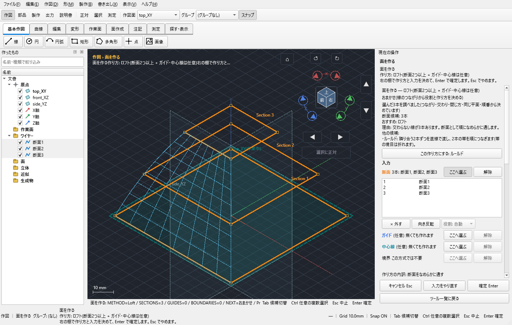
外周と内側の線から近似面を張る、または複数断面を一覧順につなぎます。
面作成の帯から開く独立した面生成。外周から張る（近似）は「外周と内部線を自動で判別」が既定。まとめて選ぶと閉じた外周候補と内部線へ自動分類する。「別の外周候補を見る」で切替可能。画面と一覧の番号を照合し、紫＝外周、緑＝内部、橙＝断面、黄色＝選択行。線上の丸と矢印で向きを確認できる。登録済みの線を押すと対応行が選ばれる。役割変更・反転は自動判定を解除して手動指定を保持する。「断面をつなぐ」では2断面以上を一覧順に通す。複数ワイヤーの断面は「一覧の選択行へ追加」でまとめる。辺数・開閉をそろえ、上へ/下へ/反転で調整する。許容偏差を指定してプレビューし、不透明で滑らかな陰影の面と全入力線の標本偏差（最大/RMS）を確認して確定。標本偏差は全域の数学的な上界ではない。入力の欠落や許容超過時は確定不可。Esc/取消は文書を変えず、元の線は残る。面は青系の連続陰影と細かな輪郭で表示する。中央の内部線を通る開いた殻では底面を勝手に追加しない。穴付き外周・支持面G1/G2は対象外。外部AI通信は不要。
図と操作手順を見る · surface.gpt_create
選んだ線の端点のつながりから閉じた輪を全部見つけ、平面 / 四辺面 / 境界面(輪が無ければロフト)で面にします。
選んだ線の端点のつながりから閉じた輪を全部見つけ、平面 / 四辺面 / 境界面(輪が無ければロフト)で面にする。線の端が別の線の途中に乗っていれば(T 字)そこで分ける。端が離れていれば、どこが何 mm かを言い、寄せるか そのままかを選べる。輪ごとに作り方を変えられる。元の線は残る。近道 Shift+F(F は全体表示)。
図と操作手順を見る · surface.from_lines
選んだものから面を作ります。作り方は選択内容から薦めますが、
線や面から面を作る、ただ1つの入口。作り方は選んだものから薦め、右の棚で変えられる。
図と操作手順を見る · surface.create
直す面の縁を、隣の面の縁へ G0/G1/G2 で合わせます。縁は面の縁の近くを押して選びます。
直す面の縁を隣の面の縁へ G0/G1/G2 で合わせる。縁は面の縁の近くを押して選ぶ。元の面は残し、合わせた新しい面を作る。
図と操作手順を見る · surface.match
2 枚の面の縁のあいだを渡す面を作ります。両端の滑らかさ(G0/G1/G2)と張りの強さを選べます。
2 枚の面の縁のあいだを渡す面を作る。両端の滑らかさと張りの強さを選ぶ。
図と操作手順を見る · surface.bridge
形を許容の内側に保ったまま、制御点の少ない面に作り直します。前後の最大のずれと
形を許容の内側に保ったまま制御点の少ない面に作り直す。前後の最大のずれと制御点の数を出す。
図と操作手順を見る · surface.refit
面を対称面(車体の中心など)に写し、境目で面が折れていないかを測ります。何枚でも写せます。
面を対称面(車体の中心など)に写し、境目の折れ目を測る。近道 Shift+M。
図と操作手順を見る · surface.mirror
面の U 方向・V 方向の線を、ふつうの線として取り出します。分割線や特徴線の元にできます。
面の U/V 方向の線を、ふつうの線として取り出す。
図と操作手順を見る · surface.iso_curves
最後に選んだ直線を軸に、ほかの線(断面。何本でも)を「回転体の角度」だけ回した
断面を軸まわりにロフト。
図と操作手順を見る · guide.revolve
面の作り方を7通りから選びます。使わない役割の行が残っていれば断ります。
役割表の構築方式。
図と操作手順を見る · guide.set_method
選んだ線を役割表の新しい行にします。役割は作り方で使うものから選びます。
新しい鎖の行を作る。
図と操作手順を見る · guide.add_row
選んだ線を、表で選んでいる行の端へつなぎます。逆向きの線は向きを直して足します。
既存鎖の端へ追加。
図と操作手順を見る · guide.append_row
表で選んでいる行を、同じ役割の中で1つ上へ動かします。
断面順を上へ。
図と操作手順を見る · guide.row_up
表で選んでいる行を、同じ役割の中で1つ下へ動かします。
断面順を下へ。
図と操作手順を見る · guide.row_down
表で選んでいる行を消します。線そのものは消えません。
役割表だけから外す。
図と操作手順を見る · guide.row_remove
表で選んでいる行の向きを逆にします。線の並びも各線の向きも逆になります。
鎖順と各線方向を反転。
図と操作手順を見る · guide.row_reverse
役割表のとおりに面を作ります。足りない役割があれば理由を出して断ります。
検査して形状ガイドを構築。
図と操作手順を見る · guide.build
役割表の行を全部消します。作り方はそのままです。
役割表を消す。元線は保持。
図と操作手順を見る · guide.clear
曲面上の閉じたワイヤーから法線方向へ立体を生成します。抜き勾配と斜め押し出しを個別指定し、面＋ワイヤーかワイヤーのみを選べます。輪郭は近似、確定形状は独立コピーです。
部品→作成→曲面押し出し。支持面（形状ガイド1面または立体の1フェイス）→その上の閉じたワイヤー→高さを指定。抜き勾配と斜め押し出しは別のボタンで併用可能。プレビューを更新→Enterで確定。面＋ワイヤー、ワイヤーのみ、立体のみを選べる。輪郭補間は近似で、標本点の最大偏差を表示。独立した固定形状として保存し、元形状の変更には追従しない。穴や複数面をまたぐ輪郭は未対応。抜き勾配は滑らかにつながる輪郭で使用。
図と操作手順を見る · part.curved_emboss
輪郭を押し出します。立体の平らな面を選べば、その面をつまんで押し引きできます。
閉じた輪郭から部品。
図と操作手順を見る · part.extrude
道具から始められます。閉じた輪郭(外周と穴)と回転軸の直線を 3D で押すと、
閉じた輪郭を回転軸の直線のまわりに回して立体にする(全回転・角度指定・対称回転)。
図と操作手順を見る · part.revolve
道具から始められます。閉じた断面を通す順に 3D で押すと(2 つ以上、何個でも)、
閉じた断面を押した順につないで立体にする(2 つ以上、何個でも)。
図と操作手順を見る · part.loft_solid
道具から始められます。閉じた輪郭と経路の線(何本でも。1 本につながるように)を
閉じた輪郭を経路の線に沿って動かして立体にする。
図と操作手順を見る · part.sweep
道具から始められます。3Dで部品の辺の近くを押すと、その辺が入ります(何本でも。
部品の辺を半径で丸める(辺は何本でも。元の部品は隠す)。 複数の直線辺・曲線辺を追加選択でき、再クリックで解除。出力は「面＋ワイヤー（立体）」「ワイヤーのみ」「立体のみ」。ワイヤーのみでは元の立体を変更せず、加工結果の境界を独立ワイヤーとして生成する。
図と操作手順を見る · part.fillet
道具から始められます。3Dで部品の辺の近くを押すと、その辺が入ります(何本でも)。
部品の辺を両側に同じ距離で落とす(辺は何本でも)。 複数の直線辺・曲線辺を追加選択でき、再クリックで解除。出力は「面＋ワイヤー（立体）」「ワイヤーのみ」「立体のみ」。ワイヤーのみでは元の立体を変更せず、加工結果の境界を独立ワイヤーとして生成する。
図と操作手順を見る · part.chamfer
道具から始められます。3Dで部品の開けたい面を押すと、その面が入ります(何枚でも。
部品の開けたい面を押して(何枚でも)、内側へ肉厚だけ残す(元の部品は隠す)。
図と操作手順を見る · part.shell
道具から始められます。3Dで部品を押すと、いまの作業平面(棚の「ずらす」で動かせます)で
いまの作業平面(「ずらす」で動かせる)で部品を 2 つに分ける(両側が部品になる)。
図と操作手順を見る · part.split
道具から始められます。押した時点で何も選んでいなくても棚が構え、
ガイド面を一定厚で部品化。
図と操作手順を見る · part.thicken
選んだ面に沿った当て板(治具)を作ります。「治具のすき間」だけ離した面に
隙間付き当て板。
図と操作手順を見る · part.surface_jig
面に厚みを付けるときの付け方を、外側・中央・内側の順に切り替えます。
外側・中央・内側。
図と操作手順を見る · part.thickness_placement
選んだ面と作業平面の間を埋めて立体にします(面ごとに 1 部品、1 回で戻る)。
面と平面の間を部品化。
図と操作手順を見る · part.thicken_to_plane
閉じたワイヤーのかごから部品を作ります。
閉じた3Dかごから部品。
図と操作手順を見る · part.from_wire_cage
KCD内の全ソリッドの重なりを3Dビューで選び、処理へ進みます。
KCD全体の重なりを3D表示し、領域を選んで処置へ進む。非表示部品も検査可能。
図と操作手順を見る · part.overlap_inspect
接触面の境界・交線を独立したワイヤーにします。元の部品は残ります。
部品A・Bの接触境界を独立ワイヤーへ。元の部品は両方残す。
図と操作手順を見る · part.contact_wire
対象のめり込みだけ削ります。相手は残します。境界ワイヤーも任意で生成できます。
重なり領域ごとに、Aから削る・Bから削る・両方から削る・残すを指定する。
図と操作手順を見る · part.trim_overlap
交わりで領域に分け、残す領域を選んで確定します。
AをBの内外で分割し、残す領域を選ぶ。Bは残す。境界ワイヤーも任意で生成。
図と操作手順を見る · part.split_overlap
部品に足します。離ればなれになるなら断ります。
二部品を一体化。
図と操作手順を見る · part.boolean_add
部品から引きます。分かれる場合は個数を先に知らせます。
第一部品から第二を切削。
図と操作手順を見る · part.boolean_cut
土台と相手に共通する部分だけを残します(相手が何個でも、全部に共通する部分)。
土台と相手の共通部分だけを残す(重ならなければ断る)。
図と操作手順を見る · part.boolean_intersect
選んだ部品を、2点で示した分だけ動かします(元の部品は隠します。何個でも 1 回で戻る)。
2 点で示した分だけ部品を動かす(元は隠す)。
図と操作手順を見る · part.move
選んだ部品を、2点で示した分だけ離して写します。元の部品は残します。
2 点で示した分だけ離して部品を写す。
図と操作手順を見る · part.copy
2点で引いた線を含み作業平面に垂直な面を鏡にして、部品を写します。元の部品は残します。
2 点の線を含む面(作業平面に垂直)で部品を鏡に写す。
図と操作手順を見る · part.mirror
中心・始まりの向き・終わりの向きの3点で、作業平面の法線まわりに部品を回します(元は隠します)。
中心・始まり・終わりの 3 点で部品を回す(元は隠す)。
図と操作手順を見る · part.rotate
選んだ部品を、決めた間隔と向きで個数ぶん並べます(元を含む。1 回で戻る)。
個数・間隔・向きで部品を並べる(パターン)。
図と操作手順を見る · part.array_linear
選んだ部品を、中心と全体の角度で個数ぶん円に並べます(元を含む。1 回で戻る)。
個数・中心・角度で部品を円に並べる。
図と操作手順を見る · part.array_circular
選んだフェイスを独立面として取り出し、従来の近似を始めます。
図と操作手順を見る · fabrication.from_face
選んだフェイスを独立面として取り出し、GPT版近似を始めます。
図と操作手順を見る · fabrication.gpt_from_face
外周を保って一方向曲げの部材へ近似し、偏差と型紙を確認します。
製作→近似→GPT版。形状ガイドの面を追加し、許容偏差・最大部材数・最小幅・板厚・曲げ方向を指定してプレビューします。「間隔を自動調整（急な曲がりを細かく）」をオンにすると、偏差の大きな区間から細分化します。オフは従来の分割です。実際の外周を残した一方向曲げの柱面への近似です。標本最大/RMS・部材間の隙間・部材数を確認し、許容内なら確定または「確定して型紙へ」。組立0〜100%で長さを保って曲げます。元の面は残り、1回のUndoで戻せます。穴を分割線が横切る条件や、手動の開口線・折り線・切れ目は未対応として拒否します。入力を捨てません。板厚は記録のみで、型紙は中立面から作ります。厚み付き部品への固定は未対応で、輪郭の線と型紙SVG/DXF等へ出力できます。外部AI通信はありません。
図と操作手順を見る · fabrication.gpt_create
部品や形状ガイドから製作モデルを作ります(元は何個でも)。元の部品は変えません。
元を別の製作近似へ。
図と操作手順を見る · fabrication.create
選んだ線を、いまの近似モデルの開口(閉じた輪)か折り線(開いた線)にします。
開口または折り線。
図と操作手順を見る · fabrication.assign_role
選んだ開いた線を、いまの近似モデルの切れ目にします(切るが部材は分かれない)。
部材非分離の切れ目。
図と操作手順を見る · fabrication.assign_relief_cut
元の部品の変更を製作モデルへ反映します。
元変更を近似へ反映。
図と操作手順を見る · fabrication.preview_update
型紙を作ります。
部材から平面型紙。
図と操作手順を見る · fabrication.create_pattern
組み立ての途中の状態を決めます。
0～100%の途中を表示。
図と操作手順を見る · fabrication.set_assembly
次に作る近似モデルの方式を、帯へ近似し直す(V1方式)と、
帯近似と面分類を切替。
図と操作手順を見る · fabrication.set_method
「現在状態を固定」で作るものを、ワイヤーのみ・部品のみ・両方の順に切り替えます。
生成内容を指定。ワイヤー＋近似面は生成欄で選択。
図と操作手順を見る · fabrication.freeze_output
選んだ線を、近似の実形状へ寄せた「_接続」の線にします。元の線は変えません。
周辺線を近似形状へ追従。
図と操作手順を見る · fabrication.set_connection_scope
いまの状態を固定して、独立したワイヤーや部品にします。
対象部材の任意組立率を短辺込みのワイヤー／近似面へ。同じ文書または別のkcd2へ生成。
図と操作手順を見る · fabrication.freeze_state
いまの曲げ具合を変えずに、0%(平らに展開した状態)の輪郭を線として作ります。
曲げ具合を変えずに 0% の輪郭を線へ。
図と操作手順を見る · fabrication.freeze_flat
いまの曲げ具合を変えずに、100%(目標の形)の状態を固定して、
曲げ具合を変えずに 100% の目標形状を固定。
図と操作手順を見る · fabrication.freeze_target
いまの曲げ状態の輪郭だけを線として作ります(固定で作るものの設定に関わらず
いまの曲げ状態の輪郭だけを線にする(固定で作るものの設定に関わらず線のみ)。
図と操作手順を見る · fabrication.freeze_wires
近似モデルの部材の編集(分割・結合・切れ目・半径 AUTO/LOCK・曲げ状態)の棚を出します。
分割・結合・切れ目・半径・曲げ状態の棚を出す。
図と操作手順を見る · fabrication.edit_part
隣り合う2つの部材を1つにします。接着線が1本減ります。
隣り合う2つの部材を1つにする。接着線が1本減る。ずれが増えることもあるが、前と後を見せてから決められる。
図と操作手順を見る · fabrication.merge_parts
1つの部材を2つに分けます。ずれは減りますが、貼り合わせが増えます。
1つの部材を2つに分ける。ずれは減るが、貼り合わせが増える。1度目は前と後を見せるだけで、もう一度同じ指示を出すと決まる。
図と操作手順を見る · fabrication.split_part
展開したときに動かさない辺を決めます。棚の「曲げる部材」に書いた番号の
展開したときに動かさない辺を決める。棚の「曲げる部材」に書いた番号の手前の境目が基準になる。床板の縁を基準にすれば、展開しても床板はその場に残り、まわりの板だけが開く。
図と操作手順を見る · fabrication.set_unfold_base
説明書に手順ページを追加します。
図と操作手順を見る · instructions.new_page
現在の手順を複製します。
図と操作手順を見る · instructions.duplicate
現在のモデルから使う部品を選び、説明書の3Dビューへ配置します。
図と操作手順を見る · instructions.capture
説明図の部品や矢印を選択・移動します。
図と操作手順を見る · instructions.move
3Dビュー上の2点で矢印を配置します。
図と操作手順を見る · instructions.arrow
手順ページに番号や説明文を配置します。
図と操作手順を見る · instructions.text
選択物を説明図から除去します。元モデルは残ります。
図と操作手順を見る · instructions.remove
説明書を専用kciファイルに保存します。
図と操作手順を見る · instructions.save
保存した説明書を開きます。
図と操作手順を見る · instructions.open
別KCDのモデルから使う部品を選び、説明書へ配置します。
図と操作手順を見る · instructions.model_file
現在のコマを選択した画像形式・解像度で出力します。
図と操作手順を見る · instructions.image
全手順をA4横のPDFに出力します。
図と操作手順を見る · instructions.pdf
画像を面に貼ります。画像とCADの2点で長さを合わせられます。選択した画像は同じ道具で編集できます。
図と操作手順を見る · image.place
書き出せる形かどうかを先に確かめます(選んだ部品を全部)。
保存前に選択部品を検査。
図と操作手順を見る · export.validate
3Dまたは左ペインで選んだ形状をプレビューして出力します。
3Dまたは左一覧の選択を取り込み、配置と3Dプレビューを確認して出力。
図と操作手順を見る · export.selection
選択形状を元位置または指定した面へ配置して別KCDに保存します。
現在形状の独立コピー。元位置または基準点と配置面を指定。
図と操作手順を見る · export.kcd
選んだ立体・面を3DプレビューしてSTLの近似三角形へ出力します。
部品を3Dプリント形式へ。
図と操作手順を見る · export.stl
選んだ立体・面・線を3DプレビューしてSTEPへ出力します。
部品をB-Rep交換形式へ。
図と操作手順を見る · export.step
型紙をSVGで書き出します。
型紙をベクトル画像へ。
図と操作手順を見る · export.svg
型紙をDXFで書き出します。
型紙・線をCAD交換形式へ。
図と操作手順を見る · export.dxf
型紙を原寸(1:1)の PDF で書き出します。印刷して切るための紙です。
型紙を原寸印刷PDFへ。
図と操作手順を見る · export.pdf_1to1
選択形状の独立コピーを配置します。
現在形状を配置して複製。元は残し、1回の取り消しで戻せる。
図と操作手順を見る · output.copy
これから作るものが入るグループを決めます。
新規要素のグループを指定。
図と操作手順を見る · group.set_active
選んだものを1つのグループにします。何も選ばなければ空のグループを作ります。
選んだものを1つのグループ(整理用フォルダ)にする。形も依存も変わらない。
図と操作手順を見る · group.create
選んだグループを解きます。**中身は消えません。** 親のグループへ戻ります。
グループだけを消す。中身は親のグループへ戻り、消えない。
図と操作手順を見る · group.dissolve
選んだグループの名前を変えます。中身には触りません。
グループの名前を変える。中身には触らない。
図と操作手順を見る · group.rename
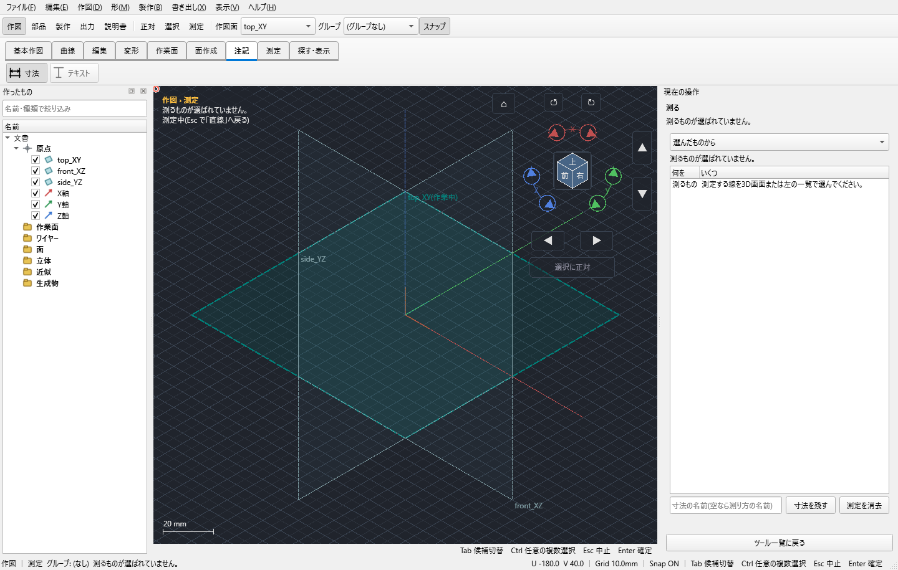
距離や角度を測ります。測った場所から作図点を作れます。
距離、XYZ差、角度、接線・法線。
図と操作手順を見る · measure.open
名前や用途で道具を探します。対象を選んだまま別モードの道具を開始できます。
図と操作手順を見る · tools.search
選択した線・面・立体・画像を画面に収めます。
図と操作手順を見る · view.fit_selection
選択した対象だけを一時表示します。選択解除しても表示を保持します。
図と操作手順を見る · view.isolate
元の表示に戻します。文書の非表示設定は変更しません。
図と操作手順を見る · view.restore_isolation
新しい文書を作ります。保存していない変更があれば先に確かめます。
新しい文書。未保存なら確認。
図と操作手順を見る · file.new
保存した文書を開きます。読めない中身なら、いまの文書はそのままにします。
KCD2を開く。失敗時は現在文書を保持。
図と操作手順を見る · file.open
いまの文書を保存します。途中で失敗しても元のファイルは残ります。
現在文書を安全に保存。
図と操作手順を見る · file.save
名前を付けて保存します。
保存先を選びKCD2を保存。
図と操作手順を見る · file.save_as
直前の操作を戻します。
直前の一操作を戻す。
図と操作手順を見る · edit.undo
戻した操作をやり直します。
戻した操作を再実行。
図と操作手順を見る · edit.redo
選んだもの(線・面・作業平面・部品・近似モデル・生成物)を消します。原点の平面と、下流があるものは、理由を出して断ります。
選んだもの(線・面・作業平面・部品・近似モデル・生成物)を削除。原点の平面と、下流参照があるものは理由を出して断る。
図と操作手順を見る · edit.delete
選んだものを画面から隠します。形は消えません。
選んだ線・部品・面を非表示。
図と操作手順を見る · view.hide_selected
隠したものを全部出します。
隠したものを再表示。
図と操作手順を見る · view.show_all
選ぶ道具に戻ります。
選択道具へ戻る。
図と操作手順を見る · selection.activate
選んだ作業平面(原点・法線・平面内X)や線(点・中心・軸・半径・角度)の数値を
作業平面や線の定義値を編集。
図と操作手順を見る · edit.numeric
見えているもの全部が入るように視点を合わせます。形は変わりません。
見える形を画面へ収める。
図と操作手順を見る · view.fit_all
選んだものに正対します。向きだけでなく、真ん中と大きさも合わせます。
選んだもの(作業平面・立体の面・面・線)へ正対。向きだけでなく、画面の真ん中へ寄せて大きさも合わせる。
図と操作手順を見る · view.align_selection
選んだものの裏側から正対します。板の裏を見たいときに使います。
選んだものの裏側から正対。板の裏を見たいときに使う。
図と操作手順を見る · view.align_selection_back
作業中の作図面に正対します(上の帯の「正対」)。形は変わりません。
作業中の作図面へ正対。
図と操作手順を見る · view.align_workplane
線の太さや色などの見え方を変えます。形は変わりません。
線色・太さなどを変更。
図と操作手順を見る · view.display_settings
板厚・面取り量・型紙の余白・縮尺など、道具が共通で使う数を決めます。
板厚・面取り量・型紙の余白・縮尺など、道具が共通で使う数を右の「数」で決める。
図と操作手順を見る · view.number_settings
ゼブラ・平均曲率・ガウス曲率(可展性)・U/V 線・曲率コーム・境目の連続・入力線からのずれで
ゼブラ・平均曲率・ガウス曲率(可展性)・U/V 線・曲率コーム・境目の連続・入力線からのずれで面を塗る。選んだ面(無ければ全部の面)と、面を作る・面の編集の下見を塗る。製作性の目安(ほぼ可展 / 二重曲率あり / 強い二重曲率)は数値の基準つきの診断材料で、断定はしない。
図と操作手順を見る · view.surface_analysis
ゼブラ(反射の縞)を入れる・消すを切り替えます。棚は開かないので、面を作りながら
ゼブラ(反射の縞)の入り切り。棚を開かないので、面を作りながら下見の縞を見られる。
図と操作手順を見る · view.analysis_zebra
グリッドも補助線も出します(V1 の「設計」)。形は変わりません。
グリッドと補助線を表示。
図と操作手順を見る · view.stage_all
グリッドだけ消します。形は変わりません。
グリッドだけ非表示。
図と操作手順を見る · view.stage_no_grid
グリッドも補助線も消して、出来上がりだけ見ます(V1 の「完成形」)。形は変わりません。
補助表示を消す。
図と操作手順を見る · view.stage_no_construction
選んでいるものだけを出します(V1 の「選択だけ」)。形は変わりません。
選択中だけ表示。
図と操作手順を見る · view.stage_selection_only
一覧で選んでいるものの名前を変えます。形は変わりません。
一覧の選択要素を改名。
図と操作手順を見る · entity.rename
吸着を入り切りします。
吸着を入り切り。
図と操作手順を見る · snap.toggle
いまの道具・右の棚・カーソル・吸着・選択を短い文にして貼り板へ入れます。
いまの道具・右の棚・カーソル・吸着・選択を短い文にして貼り板へ。文書の中身や置き場所は入らない。
図と操作手順を見る · help.copy_diagnostics
派生したものを固定して、独立した実体にします(選んだものごとに 1 つ。1 回で戻る)。
派生要素を独立実体へ。
図と操作手順を見る · derived.freeze